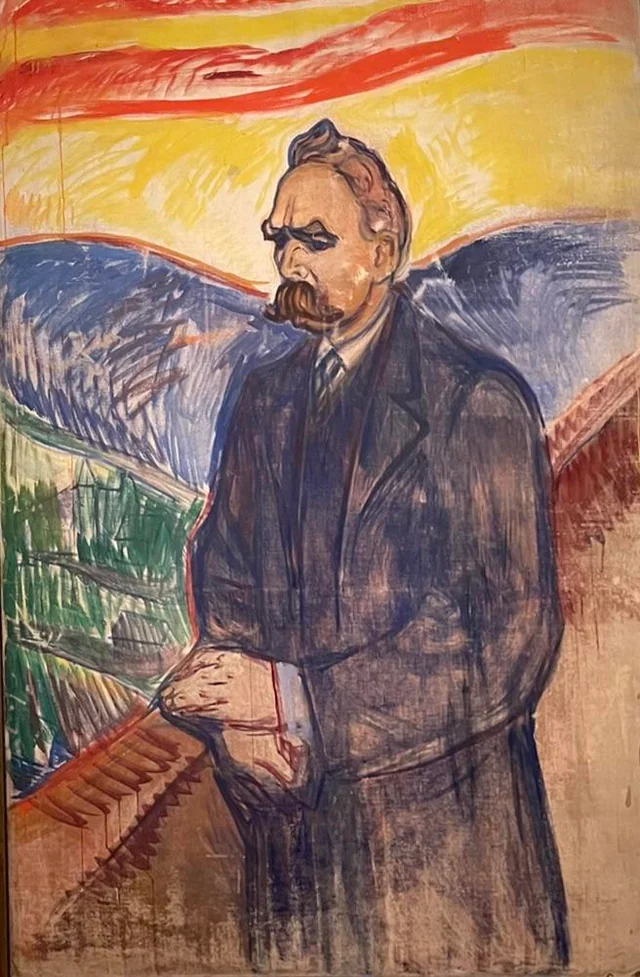

Friedrich Nietzsche
The man who killed God

A painting of Friedrich Nietzsche by Edvard Munch, 1906, as well as Munch’s copies of a couple of Nietzsche’s works
Life
- Born on the 15th of October 1844, in Germany
- After his early studies classical philology, he was awarded the Chair of Classical Philology of the University of Basel in 1869. At this point, the young man was only 24, making him the yougest holder of this title. Resigned in 1879 due to health problems that plagued him his entire life.
- After his resignement, he completed most of his impactful such as “Thus spoke Zarathoustra”, “Beyond Good and Evil” and “On the Genealogy of Morality”.
- At age 44, he suffered a collapse which resulted in a complete loss of his mental faculties, paralysis and vascular dementia. Because of this health problem, he lived the rest of his life at his mother's house.
- Died in 1897 after a delusion episode.
Quotes
“Our morality amounts to a vindictive effort to poison the happiness of the fortunate, instead of a high-minded, dispassionate, and strictly rational concern for others.”
“He who has a why to live can bear almost any how.”
“All things are subject to interpretation whichever interpretation prevails at a given time is a function of power and not truth.”
--Friedrich Nietzsche
If you are interested in learning more about the German philosopher, click here.